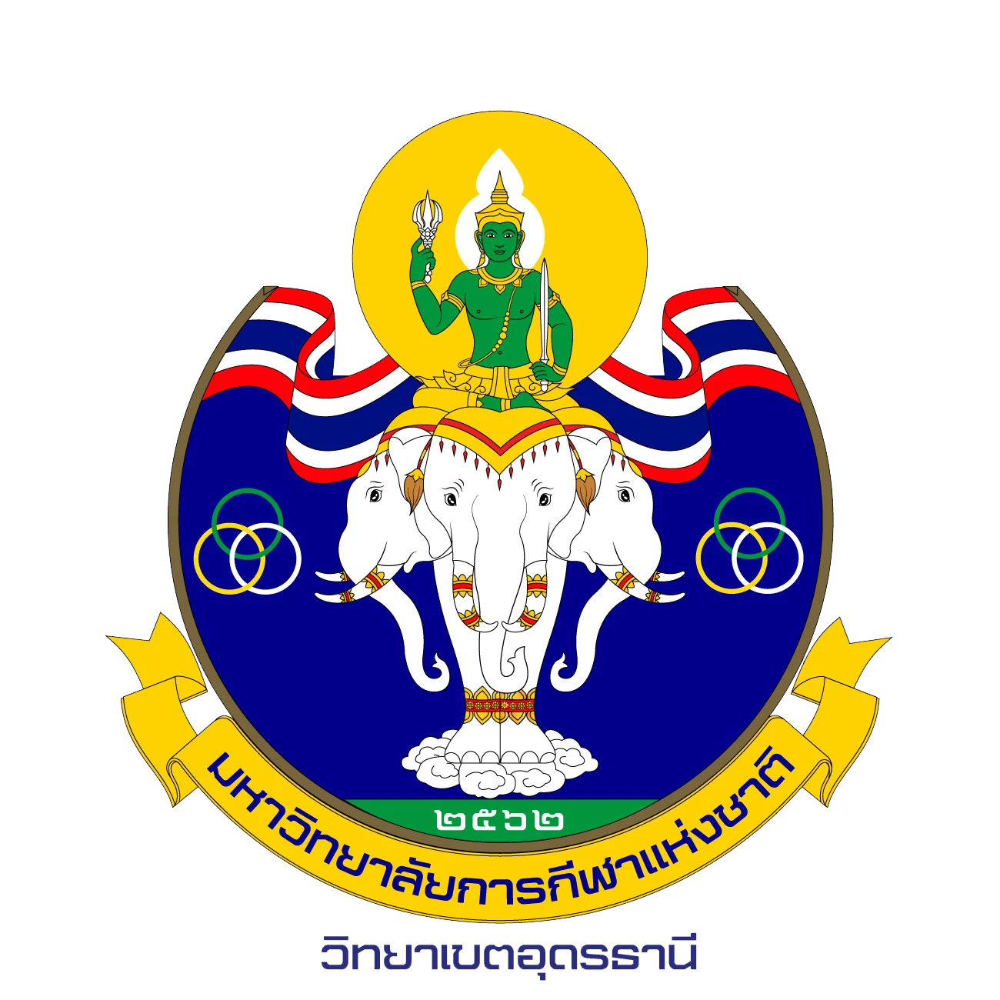

เรียนพื้นฐานให้เข้าใจก่อน แล้วค่อยลงมือออกแบบโปรแกรมการฝึกของตัวเอง
อ่านองค์ความรู้ผู้ฝึกสอนและสมรรถภาพทางกายแต่ละด้าน ทำแบบฝึกหัดและชิ้นงานในโปรแกรม แล้วตรวจงานของตัวเองกับเกณฑ์การให้คะแนนที่อาจารย์ใช้จริง

1เรียนรู้องค์ความรู้ผู้ฝึกสอน หลักการฝึก และสมรรถภาพทางกายแต่ละด้าน
2ฝึกปฏิบัติแบบฝึกหัดและชิ้นงาน: แผน 7 วัน ความเร็ว Circuit
3เกณฑ์การให้คะแนนรู้ล่วงหน้าว่าอาจารย์ประเมินอะไร และให้คะแนนอย่างไร
📖 องค์ความรู้พื้นฐาน
LEARNอ่านก่อนลงมือทำแบบฝึกหัด เนื้อหาจะทยอยเพิ่มเข้ามา
ผู้ฝึกสอนและหลักการฝึก
🧑🏫บทบาทและปรัชญาของผู้ฝึกสอนคุณลักษณะผู้ฝึกสอนที่ดี จรรยาบรรณ และความปลอดภัยของนักกีฬาเร็ว ๆ นี้
📐หลักการฝึกOverload, Specificity, Progression, Individuality, Reversibilityเร็ว ๆ นี้
⚖️Load และ V-I-Rปริมาณ ความหนัก การพัก และการเขียนโปรแกรมแบบสากลเร็ว ๆ นี้
🗓️การวางแผนการฝึก: Microcycle และหน่วยฝึก8 ขั้นตอนสร้าง Microcycle, Training Load, ตัวอย่าง, checklist และการวางแผนหน่วยฝึกอ่านได้แล้ว
🔋ระบบพลังงานATP-PC, Lactic, Aerobic และสัดส่วนพลังงานตามระยะทางเร็ว ๆ นี้
สมรรถภาพทางกายด้านต่าง ๆ
🏋️ความแข็งแรงแข็งแรงสูงสุด พลังระเบิด และความอดทนของกล้ามเนื้อเร็ว ๆ นี้
⚡ความเร็วอัตราเร่ง ความเร็วสูงสุด ความคล่องแคล่ว และความเร็วอดทนเร็ว ๆ นี้
🫁ความอดทนความอดทนทั่วไป Vcr และการฝึกแบบต่อเนื่องและหนักสลับเบาเร็ว ๆ นี้
🤸ความอ่อนตัวและการเคลื่อนไหวของข้อต่อยืดเหยียดแบบเคลื่อนไหว แบบค้างนิ่ง และข้อควรระวังเร็ว ๆ นี้
🎯การประสานสัมพันธ์และเทคนิคการเรียนรู้ทักษะ การฝึกแบบคงที่และแบบแปรผันเร็ว ๆ นี้
✍️ ฝึกปฏิบัติ
PRACTICEทำแบบฝึกหัดและชิ้นงานในโปรแกรม กด "ตรวจชิ้นงาน" เพื่อดูผลตามเกณฑ์ก่อนส่งอาจารย์
🗓️แผนการฝึก 7 วัน (Microcycle)วางเป้าหมาย เนื้อหา และ Load ทั้งสัปดาห์ พร้อม checklistเปิดใช้งาน
⚡ชิ้นงาน: ความเร็วSpeed Repetition และ Interval พร้อมระบบพลังงาน (เลือก "ชิ้นงาน: ความเร็ว" ในโปรแกรม)เปิดใช้งาน
🔁ชิ้นงาน: Circuitออกแบบวงจร เลือกท่าและตำแหน่งร่างกายเองกำลังทดสอบ
🏋️ชิ้นงาน: ความแข็งแรงคำนวณ 1RM และน้ำหนักฝึกตามประเภทเร็ว ๆ นี้
🫁ชิ้นงาน: ความอดทนกำหนดความหนักจาก Vcrเร็ว ๆ นี้
✅ เกณฑ์การให้คะแนน
RUBRICSดูล่วงหน้าว่าแต่ละชิ้นงานประเมินอะไรบ้าง คะแนนอัตโนมัติ 40% + คะแนนอาจารย์ 60%
🗓️เกณฑ์: แผนการฝึก 7 วันความครบถ้วน ความสอดคล้องของเป้าหมาย–เนื้อหา–Load และหลักการฝึกเร็ว ๆ นี้
⚡เกณฑ์: ชิ้นงานความเร็วปริมาณ ความหนัก การพัก ระบบพลังงาน และการเขียนสูตรสากลเร็ว ๆ นี้
🔁เกณฑ์: ชิ้นงาน Circuitการเลือกท่า การสลับกลุ่มกล้ามเนื้อ และ V-I-R ของวงจรเร็ว ๆ นี้